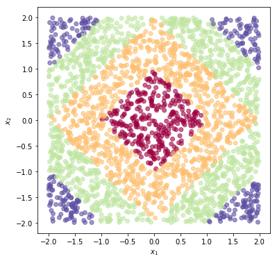
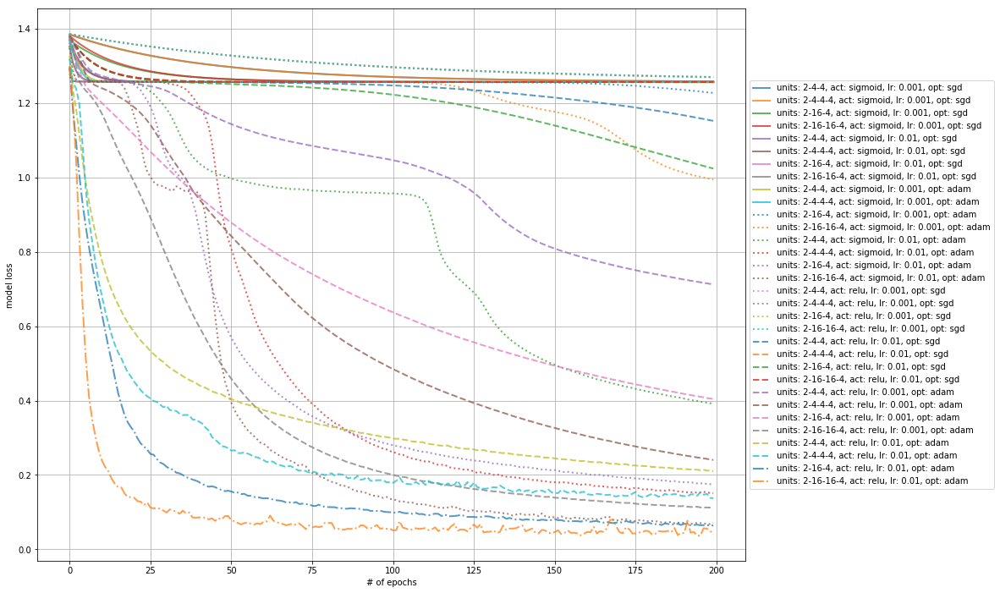
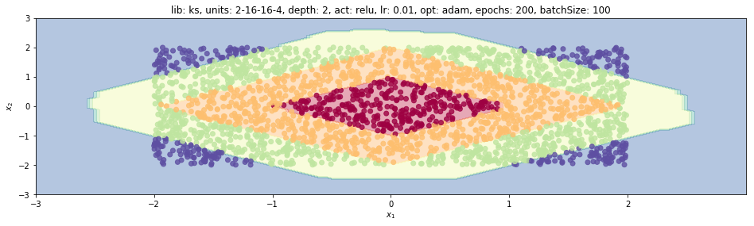
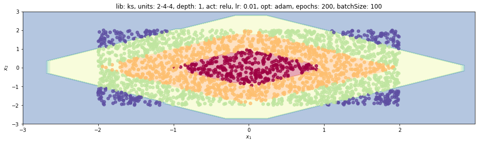
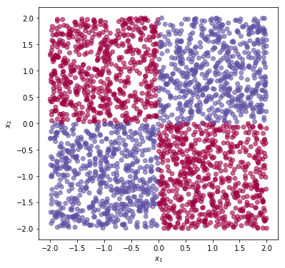
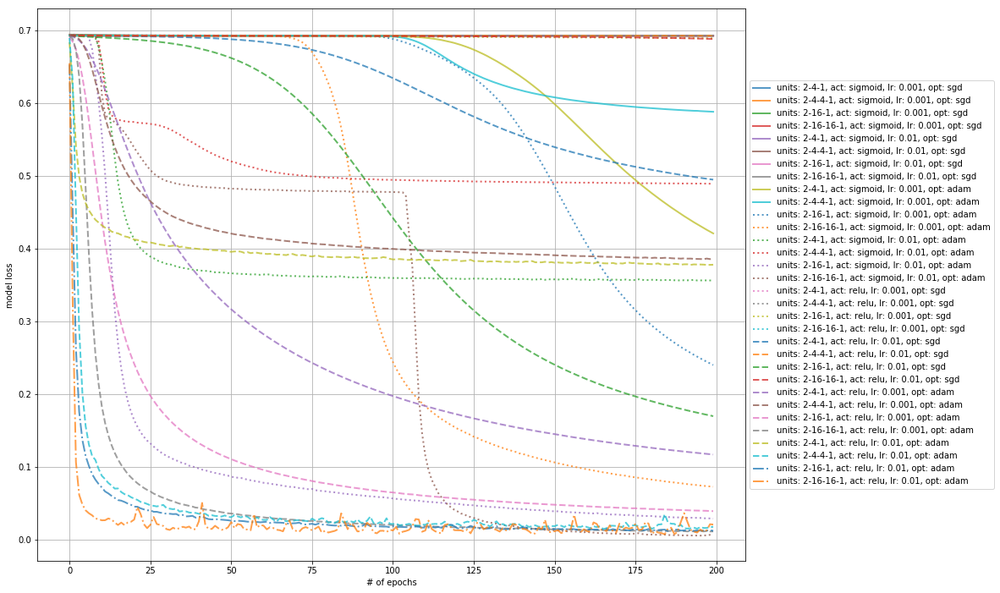
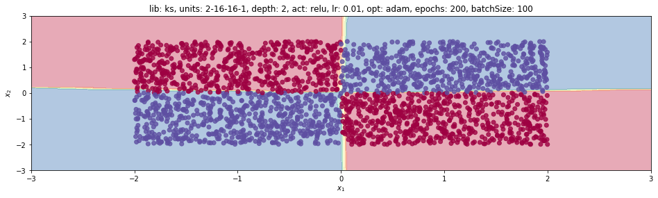
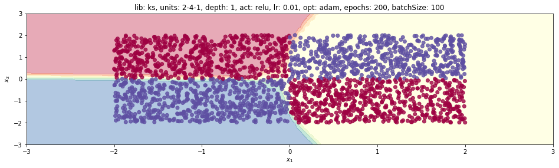
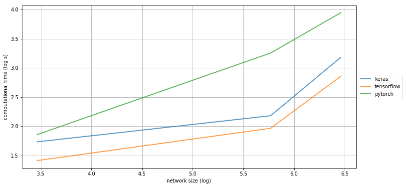

1. Introduction
This post belongs to a new series of posts related to a huge and popular topic in machine learning: fully connected neural networks.
The general series scope is three-fold:
- visualize the model features and characteristics with schematic pictures and charts
- learn to implement the model with different levels of abstraction, given by the framework used
- have some fun with one of the hottest topics right now!
In this new post we are going to:
- look for the best set of hyperparameters for each dataset type (regression and binary classification).
- compare the computational effort of each of the three machine-learning libraries.
The whole code to create a synthetic dataset and learn a neural network model with any of the four libraries mentioned above is wrapped into a Python class, trainFCNN(), and can be found in my Github repo.
2. The best set of hyperparameters for each dataset type
2.1 Regression
Now we analysis only a few combinations of HP pairs for a regression problem, the sum of two squared inputs.
Here we create a new tnn instance with the squares dataset and display it with plotPoints().
The colder the point colour is, the higher the corresponding value.
tnn = trainFCNN(nb_pnt=2500, dataset='squares')
tnn.plotPoints()

Here the list of HPs with the corresponding set of values used for the analysis, namely activation function, optimizer, learning rate, number of hidden layer neurons and network depth.
acts = ['sigmoid', 'relu'] # activations
opts = ['sgd', 'adam'] # optimizers
LRs = [1, 10] # learning rates
Nneurs = [4, 16] # number of hidden neurons
LLs = [1, 2] # depth
Since we are creating multiple models in succession, it is necessary to clear the session when we restart the hyperparameter search cell, if we use Keras.
K.clear_session()
We train $2^5=32$ different models with Keras (lib='ks') for 200 epochs.
The Python module itertools.product make it possible to use a single for loop to perform this 5-dimensional HP search.
mdls = []
for act, opt, LR, Nneur, LL in itertools.product(acts, opts, LRs, Nneurs, LLs):
tnn.train(lib='ks', nb_epochs=200, dims=[Nneur]*LL, activation=act, opt=opt, lr=LR*1e-3)
mdls.append(deepcopy(tnn))
We plot the loss history for each case. There are 10 unique colours, while the marker changes every 10 curves. We can appreciate how differently those models behave. In particular, half of them can learn something meaningful, provided enough epochs, while the other half get stuck to the wrong point (in terms of parameter space).
colors = ['b', 'g', 'r', 'c', 'k']
markers = ['solid', 'dotted', 'dashed', 'dashdot']
descrKeys = ['units', 'act', 'opt', 'lr']
plt.figure(figsize=(15, 12))
for kk, tnn in enumerate(mdls):
mark = markers[kk // 10]
plt.plot(tnn.lossHistory, label=tnn.mdlDescription(descrKeys), lw=2, ls=mark, alpha=.75)
plt.grid()
plt.legend(loc='center left', bbox_to_anchor=(1, 0.5))
plt.xlabel('# of epochs')
plt.ylabel('model loss')
plt.show()

The fastest model comes with the largest network 2-16-16-4, relu activation, adam optimizer and highest learning rate.
Its loss history is reported as a dash-dot orange line.
If the learning rate is reduced by an order of magnitude (from 1e-2 to 1e-3), the trend is slower (dashed gray line).
The second fastest model has one hidden layer only, 2-16-4, (dash-dot blue line).
The impact of the number of hidden neurons is quite significant, as the dashed gold line highlights for the 2-4-4 network trained with the same settings as the benchmark model.
We report the model prediction using these two models.
mdls[-1].plotModelEstimate(figsize=(16, 9))

mdls[-4].plotModelEstimate(figsize=(16, 9))

We cannot appreciate any difference at all at first sight. This chart is then useful to understand the model behaviour on a larger domain, but the loss chart is to be used for a proper hyperparameter selection.
Please be aware we are testing/validating each model on the whole dataset used to train the model itself. The hyperparameters should be selected wrt a validation set that is distinct from the training one. In this case, we are learning how to cope with toy examples.
2.2 Binary classification
Now we analysis only a few combinations of HP pairs for a binary classification problem, the xor function.
tnn = trainFCNN(nb_pnt=2500, dataset='xor')
tnn.plotPoints()

K.clear_session()
We train the same set of $2^5=32$ different models with Keras (lib='ks') for 200 epochs.
mdls = []
for act, opt, LR, Nneur, LL in itertools.product(acts, opts, LRs, Nneurs, LLs):
tnn.train(lib='ks', nb_epochs=200, dims=[Nneur]*LL, activation=act, opt=opt, lr=LR*1e-3)
mdls.append(deepcopy(tnn))
plt.figure(figsize=(15, 12))
for kk, tnn in enumerate(mdls):
mark = markers[kk // 10]
plt.plot(tnn.lossHistory, label=tnn.mdlDescription(descrKeys), lw=2, ls=mark, alpha=.75)
plt.grid()
plt.legend(loc='center left', bbox_to_anchor=(1, 0.5))
plt.xlabel('# of epochs')
plt.ylabel('model loss')
plt.show()

The fastest model is still the one with the largest network 2-16-16-4, relu activation, adam optimizer and highest learning rate (dash-dot orange line).
A fascinating case is 2-16-16-4/sigmoid/0.01/adam (dotted brown line). The optimizer is able to get away from a non-optimal point it has been stuck for about 50 epochs and to massively reduce the loss in a few epochs.
It then converges to the same loss as the benchmark does.
The impact of the optimizer is quite significant, as the 2-16-16-4/sigmoid/0.01/sgd case shows.
It cannot really improve that much wrt to the initial loss.
As shown earlier, the sgd optimizer needs proper settings for the learning rate.
We finally report the model prediction for the benchmark model and for its smaller version (2-4-4).
mdls[-1].plotModelEstimate(figsize=(16, 9))

mdls[-4].plotModelEstimate(figsize=(16, 9))

In this case, we can appreciate how the smaller network could not learn how to model the RHS domain. Theoretically, we know it could learn it as well, so different settings are required.
You could give it a try. The code is there!
3. Comparing the computational time of each library
We compare the three libraries, Keras, Tensorflow and Pytorch, to train the best-performing model, 2-16-16-4/relu/0.01/adam, for 300 epochs.
Then we hugely increase the network size to merely test those libraries’ performance.
Timing comes out of a CPU run!
tnn = trainFCNN(nb_pnt=2500, dataset='squares')
3.1 Keras
We start by clearing the session of Keras and estimating the computational time of each case with the Jupyter magic command %%time.
K.clear_session()
%%time
tnn.train(lib='ks', nb_epochs=300, dims=[16]*2, activation='relu', lr=.01, opt='adam')
Wall time: 5.65 s
%%time
tnn.train(lib='ks', nb_epochs=300, dims=[64]*5, activation='relu', lr=.01, opt='adam')
Wall time: 8.84 s
%%time
tnn.train(lib='ks', nb_epochs=300, dims=[128]*5, activation='relu', lr=.01, opt='adam')
Wall time: 24.1 s
3.2 Tensorflow
We move to Tensorflow.
%%time
tnn.train(lib='tf', nb_epochs=300, dims=[16]*2, activation='relu', lr=.01, opt='adam')
The final model loss is 0.08039630949497223
Wall time: 4.1 s
%%time
tnn.train(lib='tf', nb_epochs=300, dims=[64]*5, activation='relu', lr=.01, opt='adam')
The final model loss is 0.1463933289051056
Wall time: 7.13 s
%%time
tnn.train(lib='tf', nb_epochs=300, dims=[128]*5, activation='relu', lr=.01, opt='adam')
The final model loss is 0.12102506309747696
Wall time: 17.4 s
3.3 Pytorch
Let’s test Pytorch.
%%time
tnn.train(lib='pt', nb_epochs=300, dims=[16]*2, activation='relu', lr=.01, opt='adam')
Wall time: 6.41 s
%%time
tnn.train(lib='pt', nb_epochs=300, dims=[64]*5, activation='relu', lr=.01, opt='adam')
Wall time: 25.9 s
%%time
tnn.train(lib='pt', nb_epochs=300, dims=[128]*5, activation='relu', lr=.01, opt='adam')
Wall time: 51.7 s
performances = [[5.65, 8.84, 24.1], [4.1, 7.13, 17.4], [6.4, 25.9, 51.7]]
sizes = [16*2, 64*5, 128*5]
plt.figure(figsize=(12, 6))
for perf, lib in zip(performances, ['keras', 'tensorflow', 'pytorch']):
plt.plot(np.log(sizes), np.log(perf), label=lib, lw=2, alpha=.75)
plt.grid()
plt.legend(loc='center left', bbox_to_anchor=(1, 0.5))
plt.xlabel('network size (log)')
plt.ylabel('computational time (log s)')
plt.show()

Tensorflow looks to be faster than the two competitors! The strange thing is how Pytorch performance scales to increasing network sizes. We need to investigate whether this issue is related to the code or to the specific configuration it is running on. There will be a post on this topic!
If you want to start reading something about speeding up the code, you can check this post out. However, it mainly focuses on larger applications that fit fine to GPUs.